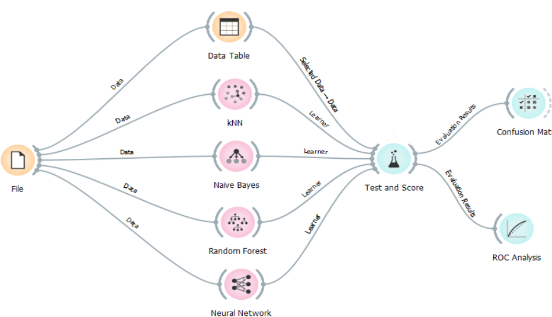

Article Three
Nowadays, technology has developed a lot, especially in the field of Machine Learning (ML), which is useful for reducing human work. In the field of artificial intelligence, ML integrates statistics and computer science to build algorithms that get more efficient when they are subject to relevant data rather than being given specific instructions [1,2].
Data Mining (DM) has
developed and turned out to be a powerful and
strong tool because extracting beneficial records
out of tons of engineering and commercial data,